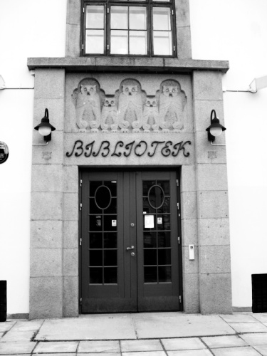

Was sollen die Eulen in Athen?, sagte sich auch der Architekt August Nielsen und platzierte sie über dem Eingang der Grünerløkka Zweigbibliothek
(seit 27. Oktober 1914, Oslos erste ÖB)


|
 Was sollen die Eulen in Athen?, sagte sich auch der Architekt August Nielsen und platzierte sie über dem Eingang der Grünerløkka Zweigbibliothek (seit 27. Oktober 1914, Oslos erste ÖB)
|